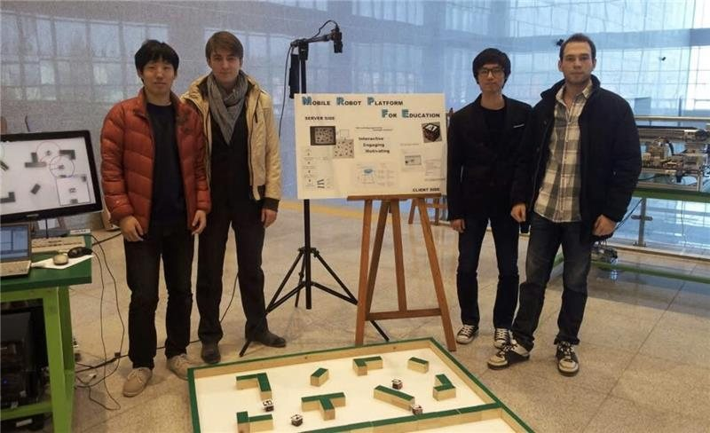
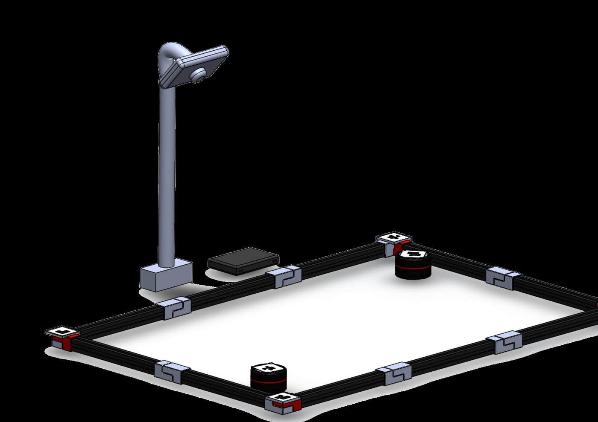
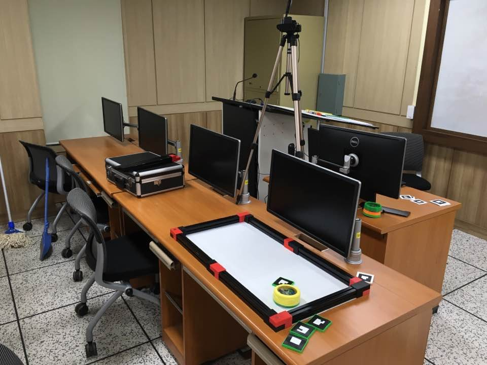
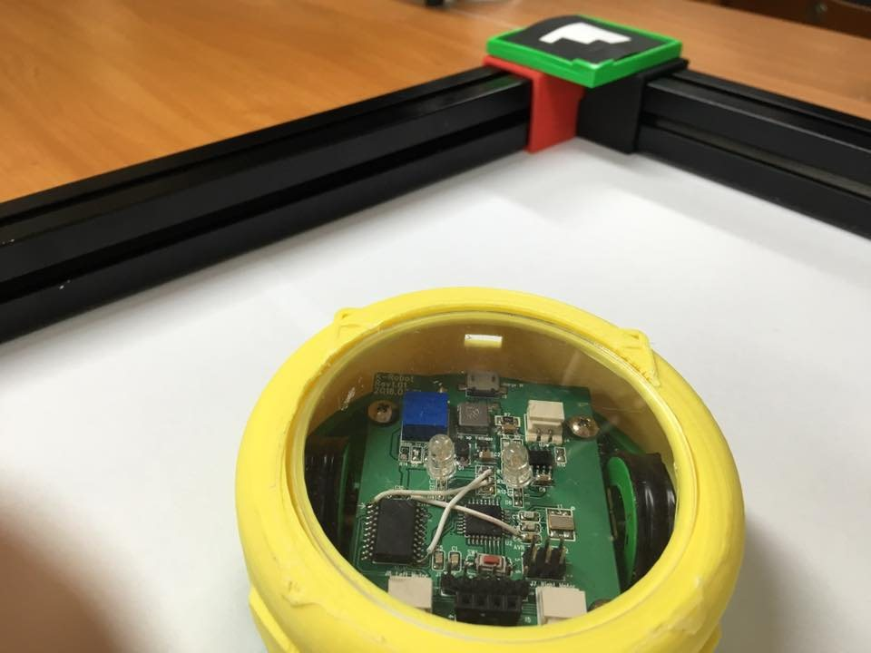
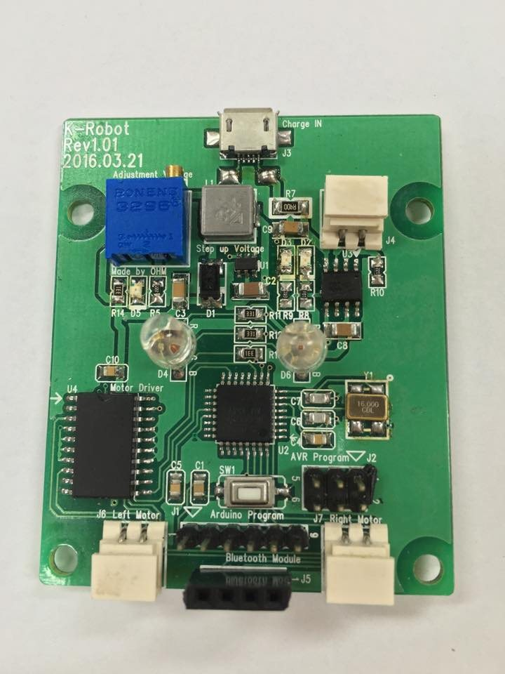

History
Three versions, one idea.
From the start, Plato Pod has been about one camera over a table of small robots, with software filling in the rest of the world. What that world contains has grown with each version.
A camera that plays every sensor
KoreaTech, Korea
The first platform was built at the Korea University of Technology and Education to make programming classes less about memorising a language and more about making something move. Off-the-shelf robots ran in a table-top arena with real walls and real obstacles. One overhead camera watched the whole table, and a computer-vision algorithm turned what it saw into the robots' sensors, so a line follower, a maze, a vacuum cleaner and a game of tag could all be set without extra hardware. The robots ran on the Robot Operating System and were reached over the network, so students could program them from anywhere.
Team: Heo Junho, Kim Dongyun and Park Junsu, with Artem Lensky. Published as “Educational platform for learning programming via controlling mobile robots”, IEEE Xplore.

Robots of our own
KoreaTech, Korea
The second platform replaced the off-the-shelf robots with a differential-drive robot designed in-house, 9 cm in radius and 6 cm high, driven over a Bluetooth link. A mini PC became the server, and the arena became something to assemble, with the camera on its own post above it.
Team: Konho Park, Kyongjae Kim, Jongyoun Lim and Raminta Olbutaite.




A world around the robots
UNSW Canberra, Australia
At UNSW Canberra the platform became what it is today. The pods shrank to 70 mm across, on ESP32 boards over Bluetooth. The arena no longer needs walls: its boundary comes from markers on the corners, and the obstacles are virtual. And around the robots grew a simulated world of sensors, hazards, virtual units and an opposing force on a server built on ROS 2, shared with ATAK, for the classroom and for rehearsal alike.
Team: Artem Lensky and Rhianne Chng. See About.